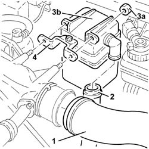
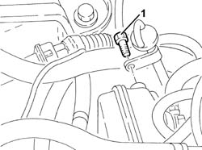
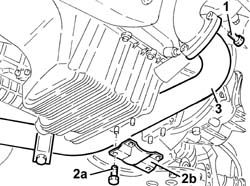
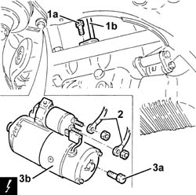
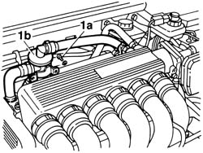
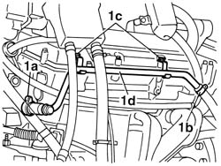
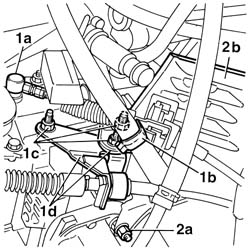
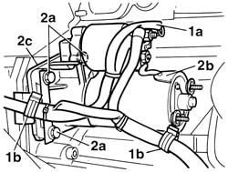

5520B12 starter motor - r+r for versions with a/c
- Path
- Procedures > 55 ELECTRICAL EQUIPMENT > 5520 ENGINE STARTING > 5520B starter motor and components > 5520B12 starter motor - r+r for versions with a/c
- Kind
- repair procedure (removal / refitting; the operation number is the code)
- Applies to
- engines: 2.5 V6, 3.2 V6, 2.4 JTD 10v; all production periods
- Interactive page
- https://sloeber94.github.io/elrnDB-a156/en/#/3238415
Applies to: engines: 2.4 JTD 10v; all production periods
 Removing
Removing
 Refitting
RefittingPosition the vehicle on the ramp.
Disconnect the battery negative (-) terminal.
 | Name | Connector |
|---|---|---|
- | Battery |
1. Disconnect the air inlet hose from the inlet manifold.
2. Disconnect the vapour supply pipe to the inlet from the oil vapour separator.
3. Undo nuts (3a), then remove the oil vapour separator (3b).
4. Remove the bracket.

Applies to: engines: 2.4 JTD 10v; all production periods
Undo the outer starter motor bolts.
1. Undo the upper engine oil dipstick tube bolt.

Applies to: engines: 2.4 JTD 10v; all production periods
Raise the vehicle.
1. Unscrew the bolts securing the front exhaust pipe section to the turbocharger.
2. Undo the nuts (2a) and remove the reinforcement bracket (2b).
3. Lower the front exhaust pipe section as necessary.

Applies to: engines: 2.4 JTD 10v; all production periods
1. Undo the lower bolt (1a) and remove the engine oil dipstick (1b).
2. Disconnect the electrical connections from the starter motor.
3. Undo the remaining bolt (3a) and remove the starter motor (3b).
| Name | Connector |
|---|---|---|
3b | Starter' motor |

Applies to: engines: 2.4 JTD 10v; all production periods
Refitting
RemovingFit the starter motor and tighten the inner bolt to torque.
 | Fastening | Component | Ø | Value (daNm) |
|---|---|---|---|---|
- | Bolt | STARTER MOTOR | M8 | (Gearbox side) 2.4 ÷ 3.0 |
Connect the electrical connections to the starter motor.
Fit the engine oil dipstick and tighten the lower bolt.
Fit the reinforcement bracket and fix it using the nuts.
Tighten the bolts securing the front section f the exhaust pipe to the turbocharger.
Lower the vehicle.
Tighten the upper engine oil dipstick pipe.
Tighten the outer starter motor bolts.
| Fastening | Component | Ø | Value (daNm) |
|---|---|---|---|---|
- | Bolt | STARTER MOTOR | M8 | (Gearbox side) 2.4 ÷ 3.0 |
Replace the oil vapour separator complete with bracket in its housing and fix it using the nuts.
Connect the vapour supply pipe to the inlet from the oil vapour separator.
Connect the air inlet hose to the inlet manifold.
Connect the negative (-) battery terminal.
Remove the car from the ramp.
Applies to: engines: 2.5 V6, 3.2 V6; all production periods
Removing
Refitting7055B54 under-engine guard - r r
Drain the cooling system.
1076B52 exhaust pipe (one) leaving l/h or r/h exhaust manifold - r + r
1048A34 sleeve(s) from flow meter to air supply capacity case - r + r
1008C10 power unit upper reaction link r r
1. Undo the two fixing bolts (1a) and move the oil vapour separator (1b) away from the intake chamber.

Applies to: engines: 2.5 V6, 3.2 V6; all production periods
Detach the main electrical wiring behind the cylinder head from the fastenings and move it.
Detach the electrical connectors from the bracket secured to the thermostat unit and move them (refer to 1088C40 thermostat- r + r ).
Undo the two bolts and detach the bracket from the thermostat unit.
1. Loosen the thermostat side band (1a) and the heat exchanger side band (1b), undo the two bolts (1c) and then remove the metal coolant supply pipe (1d) to the heat exchanger.

Applies to: engines: 2.5 V6, 3.2 V6; all production periods
1072C30 l/h exhaust manifold - r + r and replace seal
1. Disconnect the track rod ends (1a) for the gear control rods and release the band (1b) and the starter motor wiring. Undo the fixing nuts (1c) and detach the supports (1d) from the gearbox.
2. Undo the nut (2a) and move the heat shield (2b) to gain access to the starter motor fastenings.

Applies to: engines: 2.5 V6, 3.2 V6; all production periods
1. Disconnect the electrical leads (1a) from the starter motor and release the wiring from the retaining bands (1b).
2. Undo the three fixing bolts (2a) and extract the starter motor (2b) with the spacer (2c), keeping the bracket complete with wiring retaining spring.
| Name | Connector |
|---|---|---|
1a | Starter' motor |

Applies to: engines: 2.5 V6, 3.2 V6; all production periods
Refitting
RemovingReposition the spacer and the starter motor, position the bracket complete with spring and tighten the three bolts to torque.
| Fastening | Component | Ø | Value (daNm) |
|---|---|---|---|---|
- | Bolt | STARTER MOTOR | M8 | (Gearbox side) 2.4 ÷ 3.0 |
Reconnect the electrical wiring and fasten the wiring with the springs.
1072C30 l/h exhaust manifold - r + r and replace seal
Reposition the heat shield, fit the supports for the gearbox control rods and close the three nuts.
Reconnect the track rod ends to the gear levers.
Reconnect the metal coolant supply pipe to the thermostat and to the heat exchanger and tighten the fixing bolts to torque.
| Fastening | Component | Ø | Value (daNm) |
|---|---|---|---|---|
- | Bolt | CAM COVERS | M7 | 1.2 - 1.5 |
Refit the bracket on the thermostat unit and reconnect the electrical connectors.
Reposition the main electrical wiring.
Refit the oil vapour separator on the intake chamber and secure it using the two bolts.
1008C10 power unit upper reaction link r r
1048A34 sleeve(s) from flow meter to air supply capacity case - r + r
1076B52 exhaust pipe (one) leaving l/h or r/h exhaust manifold - r + r
Top up the coolant and check the level.
Topics linked from this page (9)
- 1008C10 power unit upper reaction link r r
- 1048A34 sleeve(s) from flow meter to air supply capacity case - r + r
- 1072C30 l/h exhaust manifold - r + r and replace seal
- 1076B52 exhaust pipe (one) leaving l/h or r/h exhaust manifold - r + r
- 1088C40 thermostat- r + r
- 5530B10 battery - r+r
- 7055B54 under-engine guard - r r
- A1 Battery
- A20 Starter' motor